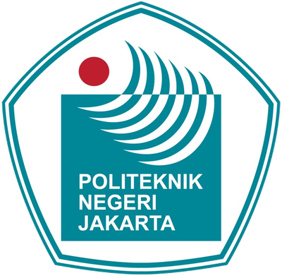
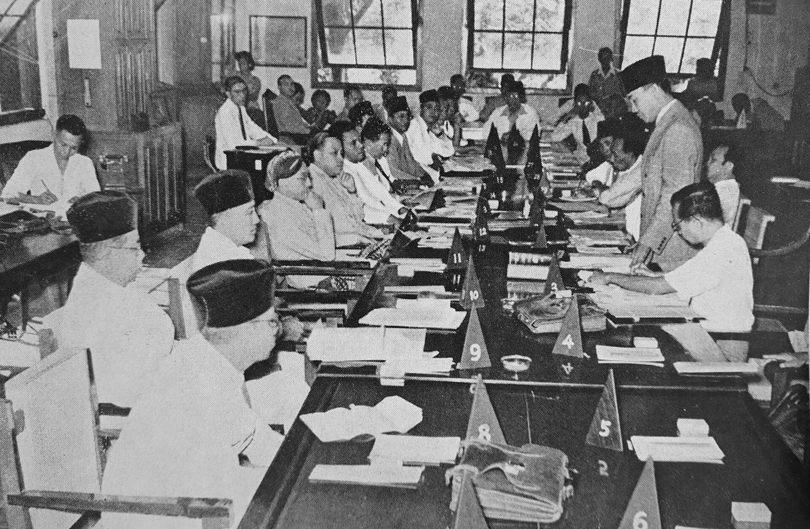
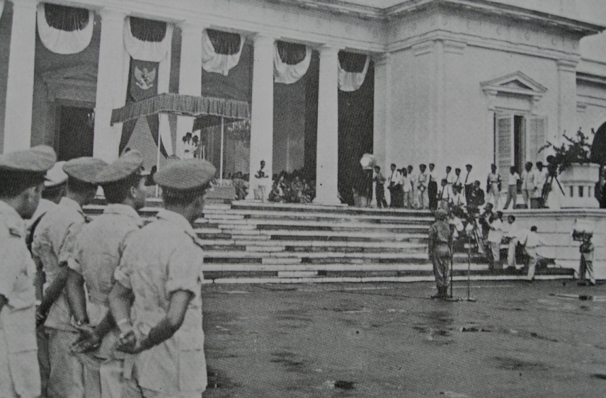
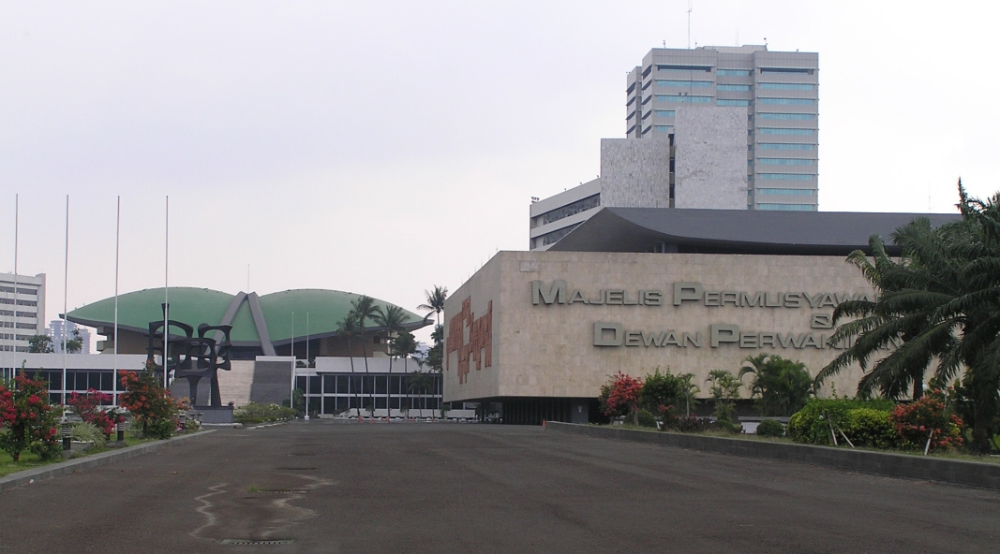

Mata Kuliah Pendidikan Pancasila
UUD 1945:
Konstitusi yang
Terus Hidup
Konstitusi, Dinamika, dan Amandemen UUD 1945
Materi dan Capaian
Capaian pembelajaran
Mahasiswa mampu menjelaskan UUD 1945 serta penerapannya dalam kehidupan berbangsa dan bernegara.
Konstitusi
Apa itu dan untuk apa.
“Apa itu konstitusi, dan mengapa negara membutuhkannya?”
Slide 3 – 4Dinamika UUD 1945
Dari 1945 sampai Reformasi.
“Mengapa konstitusi Indonesia berganti-ganti?”
Slide 5 – 8Amandemen 1999–2002
Alasan, isi, dan dampaknya.
“Apa dampak amandemen bagi kita sebagai warga?”
Slide 9 – 14Konstitusi
- Asal kata: constituer (Prancis) = membentuk.
- Arti luas: seluruh aturan dasar penyelenggaraan negara, tertulis maupun tidak tertulis.
- Arti sempit: naskah tertulis, yaitu Undang-Undang Dasar (UUD).
- Herman Heller: konstitusi lebih luas daripada UUD.
- K.C. Wheare: setiap UUD perlu memuat cara mengubahnya, karena masyarakat berubah.
Inti: setiap UUD adalah konstitusi, tetapi tidak semua konstitusi berbentuk UUD. Bagi Indonesia, konstitusi tertulisnya adalah UUD NRI 1945.
Kedudukan Konstitusi
Sumber hukum tertinggi
Semua aturan di bawahnya tidak boleh bertentangan dengan UUD.
Pembatas kekuasaan
Menurut C.F. Strong, konstitusi membatasi tindakan sewenang-wenang penguasa.
Piagam lahirnya negara
Dokumen nasional yang menandai berdirinya negara.
Simbol pemersatu
Menurut Jimly Asshiddiqie, konstitusi berfungsi simbolik untuk mempersatukan bangsa.
Hierarki Peraturan Perundang-undangan
Dasar: Pasal 7 ayat (1) UU No. 12 Tahun 2011
Makin ke bawah, tidak boleh bertentangan dengan yang di atasnya.
Tiga Konstitusi, Empat Periode
| Periode | Konstitusi | Bentuk negara | Sistem pemerintahan |
|---|---|---|---|
| 18 Agu 1945 – 27 Des 1949 | UUD 1945 | Kesatuan | Presidensial (masa darurat) |
| 27 Des 1949 – 17 Agu 1950 | Konstitusi RIS | Serikat (RIS) | Parlementer |
| 17 Agu 1950 – 5 Jul 1959 | UUDS 1950 | Kesatuan | Parlementer |
| 5 Jul 1959 – sekarang | UUD 1945 (kembali) | Kesatuan | Presidensial |
UUD 1945 Awal (1945–1949)

Sidang PPKI, 18 Agustus 1945 · Wikimedia Commons
18 Agustus 1945Sehari setelah Proklamasi: UUD 1945 disahkan PPKI
- 18 Agustus 1945, sehari setelah proklamasi: PPKI mengesahkan UUD 1945 sebagai konstitusi pertama.
- Naskahnya disusun lewat BPUPKI (dilantik 28 Mei 1945).
- Masa darurat: MPR dan DPR belum terbentuk, kekuasaan Presiden sangat besar, dibantu KNIP.
- Sejak awal Bung Karno menyebut UUD ini bersifat sementara (disampaikan Jimly Asshiddiqie).
- Isi awal: 37 pasal, ditambah Aturan Peralihan dan Aturan Tambahan.
Konstitusi RIS & UUDS 1950
Konstitusi RIS 1949
NEGARA SERIKATUUDS 1950
KEMBALI KE NEGARA KESATUANDekrit 1959, Orde Lama & Orde Baru
- Konstituante (dibentuk 1956) gagal menetapkan UUD baru.
- 5 Juli 1959: Presiden Soekarno mengeluarkan Dekrit, dekrit pertama dalam sejarah RI. Isinya:
- 1Membubarkan Konstituante.
- 2UUD 1945 berlaku kembali, UUDS 1950 tidak berlaku.
- 3Membentuk MPRS dan DPAS.
- Orde Lama: banyak penyimpangan, misalnya Presiden seumur hidup.
- Orde Baru: UUD 1945 disakralkan, tidak boleh diubah. Pasal 7 asli tidak membatasi berapa kali Presiden dipilih kembali.
- Akibatnya kekuasaan Presiden sentralistik tanpa pengawasan berarti.

Soekarno membacakan Dekrit, Istana Merdeka, 5 Juli 1959
DisakralkanUUD 1945 dikunci, tidak boleh diubah selama Orde Baru.
UUD 1945 Diamandemen?
1 Cegah otoritarianisme
Kekuasaan terlalu besar di eksekutif (executive heavy) diganti mekanisme saling mengawasi dan mengimbangi (checks and balances).
2 Hapus pasal multitafsir
Celah “pasal karet” yang bisa melanggengkan kekuasaan, misalnya tidak ada batas periode Presiden.
3 Perkuat HAM
Tuntutan Reformasi akan perlindungan hak warga yang lebih rinci.
4 Wujudkan otonomi daerah
Kekuasaan tidak hanya di pusat; daerah ikut mengatur urusannya.
Yang tidak diubah
Pembukaan UUD 1945 dan bentuk NKRI.Pembukaan dipertahankan karena memuat falsafah Pancasila.

Gedung MPR/DPR/DPD RI, Senayan: tempat Sidang MPR 1999–2002 yang mengubah UUD 1945
Amandemen UUD 1945 (1999–2002)
Presiden dibatasi, DPR dikuatkan.
HAM dan otonomi daerah.
Pemilu langsung, MK, KY, DPD.
DPA dihapus, anggaran pendidikan.
Amandemen I – IV
| Tahap | Waktu | Perubahan utama |
|---|---|---|
| I | Okt 1999Kekuasaan | Maksimal 2 periode Presiden dan Wapres (Pasal 7). Hak membentuk UU pindah dari Presiden ke DPR (Pasal 20). |
| II | Agu 2000Hak & daerah | Bab XA HAM (Pasal 28A–28J, rinci hak warga). Pengaturan otonomi daerah (Pasal 18). |
| III | Nov 2001Lembaga | Pemilu langsung Presiden (Pasal 6A). Dibentuk MK dan KY. Lahir DPD (Pasal 22C–22D). Indonesia adalah negara hukum (Pasal 1 ayat 3). |
| IV | Agu 2002Penyempurnaan | MPR terdiri dari DPR + DPD. DPA dihapus. Anggaran pendidikan minimal 20% APBN/APBD (Pasal 31 ayat 4). |
Sebelum vs Sesudah Amandemen
| Aspek | Sebelum | Sesudah |
|---|---|---|
| Kedaulatan rakyat (Pasal 1 ayat 2) | Dilakukan sepenuhnya oleh MPR | Dilaksanakan menurut UUD |
| MPR | Lembaga tertinggi negara | Sejajar dengan lembaga negara lain |
| Lembaga negara | MPR, Presiden, DPR, DPA, BPK, MA | MPR, DPR, DPD, Presiden, BPK, MA, MK (+ KY) |
| Presiden | Dipilih MPR, tanpa batas periode | Dipilih langsung, maksimal 2 periode |
| Naskah | 37 pasal, ada Penjelasan | 73 pasal, Penjelasan dihapus |
| Prinsip | Executive heavy | Checks and balances |
UUD 1945 dalam Kehidupan Bernegara
Hasil amandemen yang kamu alami
Pemilu langsung: rakyat memilih Presiden dan Wapres (Pasal 6A).
Mahkamah Konstitusi: menguji UU terhadap UUD (Pasal 24C ayat 1), sehingga warga bisa menggugat UU yang dianggap melanggar konstitusi.
Anggaran pendidikan minimal 20% APBN/APBD (Pasal 31 ayat 4).
HAM dijamin rinci (Bab XA), termasuk kebebasan berpendapat.
Contoh kasus · Putusan MK No. 62/PUU-XXII/2024
Cara mengubah UUD (Pasal 37)
Ayat (1) · UsulDiajukan minimal 1/3 anggota MPR, tertulis & jelas bagiannya.
Ayat (3) · KuorumSidang dihadiri minimal 2/3 anggota MPR.
Ayat (4) · PutusanDisetujui minimal 50% + 1 dari seluruh anggota MPR.
Ayat (5) · Batas mutlakBentuk NKRI tidak dapat diubah.
Wacana Amandemen Kelima
Status perJuli 2026
Ketua MPR Ahmad Muzani: MPR masih menyerap aspirasi, belum memutuskan amandemen kelima, dan belum ada draf. Presiden Prabowo mengingatkan agar tidak terburu-buru.
Topik yang sering dibahas
Tiga kelompok pandangan (pemetaan Badan Pengkajian MPR)
Diskusi
- 1Perlukah amandemen kelima? Apa alasannya?
- 2Kalau perlu, apa yang diubah dan siapa yang mengawal prosesnya?
- 3Apa risikonya jika dibuka tanpa kesepakatan luas?
Tiga Hal untuk Dibawa Pulang
Konstitusi adalah aturan dasar negara. Fungsinya membatasi kekuasaan dan menjadi hukum tertinggi.
UUD 1945 melewati empat periode (1945, RIS, UUDS, 1959) dan diamandemen empat kali (1999–2002) tanpa mengubah Pembukaan dan bentuk NKRI.
Hasilnya: kekuasaan terbagi, HAM lebih kuat, rakyat memilih langsung. Konstitusi harus tetap hidup dan dikawal.
Referensi
- Undang-Undang Dasar Negara Republik Indonesia Tahun 1945 (naskah setelah perubahan keempat). MPR RI.mpr.go.id
- UU No. 12 Tahun 2011 tentang Pembentukan Peraturan Perundang-undangan, Pasal 7 ayat (1).peraturan.go.id
- Mahkamah Konstitusi dalam Sistem Ketatanegaraan RI. Materi Pusdik MK.pusdik.mkri.id
- Konstitusi yang Pernah Berlaku di Indonesia Sejak 1945. Fakultas Hukum UMSU.fahum.umsu.ac.id
- Reformasi Konstitusi Pasca Orde Baru. Jurnal Humanika, UNY.journal.uny.ac.id
- Proses Perubahan Mendasar Konstitusi Indonesia Pra dan Pasca Amandemen. Jurnal Siyasah, IAIN Metro.e-journal.metrouniv.ac.id
- Konstitusi: Pengertian, Fungsi, dan Jenis. Gramedia Literasi.gramedia.com
- Kajian Normatif Hubungan Antar Lembaga Negara Sebelum dan Sesudah Amandemen. Jurnal Humani, USM.journals.usm.ac.id
- Potret Konstitusi Pasca Amandemen UUD 1945, A.M. Fatwa. Katalog Perpustakaan MK.simpus.mkri.id
- Isi Dekrit Presiden 5 Juli 1959. Roboguru (sumber sekunder).roboguru.ruangguru.com
- Wacana Amandemen Konstitusi Masih Terbelah (2019) dan MPR Gelar Seminar Evaluasi Pelaksanaan UUD 1945 (2018). Hukumonline.hukumonline.com
- MPR Nilai Amandemen UUD 1945 Keniscayaan untuk Perbaikan Konstitusi. NU Online.nu.or.id
- Ketua MPR Bantah Isu Pemakzulan lewat Amandemen (8 Juli 2026). AFU.ID.afu.id
- [Buku acuan dosen: isi judul, penulis, penerbit, tahun] sesuai referensi 1–3 di RPS.
Sekian
Terima Kasih
Apakah ada pertanyaan?
~ Kelompok 5 ~
Soal Esai untuk Ujian
Jelaskan perbedaan konstitusi dalam arti luas dan arti sempit, beserta contohnya di Indonesia.
- Arti luas: seluruh aturan dasar penyelenggaraan negara, tertulis maupun tidak tertulis. Contoh tidak tertulis: konvensi pidato kenegaraan Presiden tiap 16 Agustus.
- Arti sempit: naskah tertulis = UUD. Contoh: UUD NRI 1945.
- Herman Heller: konstitusi lebih luas daripada UUD.
Sebutkan konstitusi yang pernah berlaku di Indonesia beserta periode dan sistem pemerintahannya.
- UUD 1945: 18 Agu 1945 – 27 Des 1949, presidensial.
- Konstitusi RIS: 27 Des 1949 – 17 Agu 1950, parlementer (negara serikat).
- UUDS 1950: 17 Agu 1950 – 5 Jul 1959, parlementer.
- UUD 1945 (Dekrit): 5 Jul 1959 – sekarang, presidensial.
Mengapa UUD 1945 diamandemen? Jelaskan dengan dua alasan dan satu contoh pasal.
- Cegah otoritarianisme: executive heavy diganti checks and balances.
- Hapus pasal multitafsir: Pasal 7 asli tidak membatasi masa jabatan; kini maksimal 2 periode.
- Alasan lain: perkuat HAM (Bab XA), otonomi daerah (Pasal 18).
Bandingkan kedudukan MPR sebelum dan sesudah amandemen.
- Sebelum: lembaga tertinggi negara, melakukan sepenuhnya kedaulatan rakyat, memilih Presiden.
- Sesudah: sejajar dengan lembaga negara lain; kedaulatan dilaksanakan menurut UUD; terdiri dari DPR + DPD.
- Tetap berwenang mengubah UUD, melantik, dan memberhentikan Presiden/Wapres setelah putusan MK.
Sebutkan hasil pokok tiap tahap amandemen dan bagian yang tidak diubah.
- I (1999): maks. 2 periode, kuasa membentuk UU ke DPR.
- II (2000): Bab XA HAM, otonomi daerah.
- III (2001): pemilu langsung, MK, KY, DPD, negara hukum.
- IV (2002): MPR = DPR + DPD, DPA dihapus, pendidikan min. 20%.
- Tidak diubah: Pembukaan UUD 1945 dan bentuk NKRI.
Kunci Singkat
Klik salah satu soal di kiri untuk menampilkan kunci jawaban singkatnya di sini. Gunakan untuk mengecek hafalan sebelum ujian.